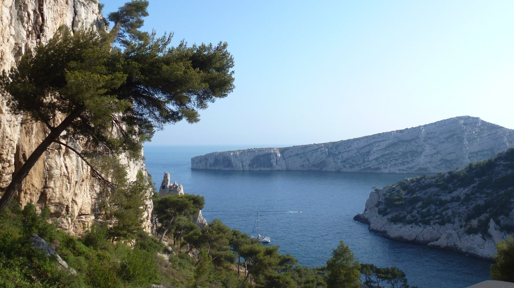

Conference on Extreme Value Theory and Laws of Rare Events: 14th-18th July 2014
The conference is about extreme value laws from a theoretical and applied perspective, bringing together experts from statistics, dynamics, physics and meteorology. The aim is to have mostly hour-long talks, along with a few shorter talks, and to leave time for discussion and collaboration.
The conference will take place at CIRM,
outside Luminy, near Marseille
Main speakers
Henk Bruin (Vienna)
Juan Juan Cai (Delft)
Davide Faranda (CEA, Gif-sur-Yvette)
Stefano Galatolo (Pisa)
Ivette Gomes* (Lisbon)
Armelle Guillou (Strasbourg)
Nicolai Haydn (Southern California)
Mark Holland (Exeter)
Juerg Huesler (Bern)
Yuri Kifer (Hebrew Univ.)
Natalia Markovich (Rus. Acad. Sci.)
Thomas Mikosch (Copenhagen)
Philippe Naveau (LSCE)
Matthew Nicol* (Houston)
Mark Pollicott (Warwick)
JÈrÙme Rousseau (Bahia)
BenoÓt Saussol (Brest)
Johan Segers (Louvain)
*Special introductory talks.

Scientific Committee
Organisers
P. Collet (…cole Polytechnique)
Michael Ghil (UCLA/ENS Paris)
Ivette Gomes (Lisbon)
Valerio Lucarini (Hamburg)
Matthew Nicol (Houston)
Holger RootzÈn (Chalmers)
Ana Cristina Freitas (Porto)
Jorge Freitas (Porto)
Mike Todd (St Andrews)
Sandro Vaienti (Toulon/Marseille)
For abstracts, click here. For a reasonably up-to-date list of participants, click here.